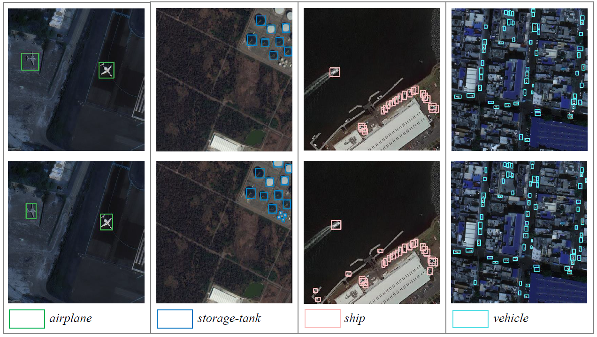
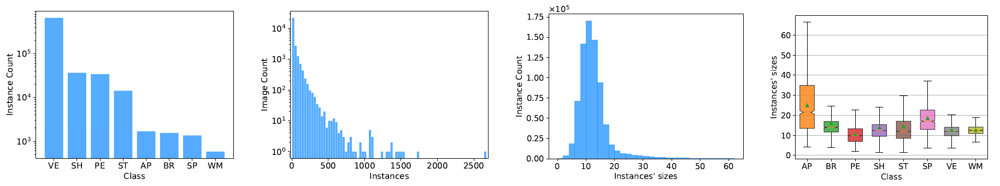
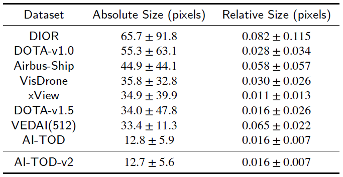

Detecting Tiny Objects in Aerial Images
Chang Xu,
Jinwang Wang,
Wen Yang,
Huai Yu,
Lei Yu,
Gui-Song Xia,
EIS SPL, Wuhan University, Wuhan, China
LIESMARS CAPTAIN, Wuhan University, Wuhan, China
The source code will be released soon!
Abstract
Tiny object detection (TOD) in aerial images is a challenging task since a tiny object only contains a
few pixels. State-of-the-art object detectors do not provide satisfactory results on tiny objects due to
the lack of supervision from discriminative features. Our key observation is that the Intersection over
Union (IoU) metric and its extensions are very sensitive to location deviation of the tiny objects, thus
drastically deteriorating the quality of label assignment when used in anchor-based detectors. To this
end, we propose a new evaluation metric dubbed Normalized Wasserstein Distance (NWD) and a new
RanKing based Assigning (RKA) strategy for tiny object detection. The proposed NWD-RKA strategy
can be easily embedded into all kinds of anchor-based detector to replace the standard IoU threshold
based one, thereby greatly alleviating problems in label assignment and providing sufficient supervision
information for network training. Tested on four datasets, NWD-RKA can consistently improve tiny
object detection performance by a large margin. Besides, observing obvious noisy labels in the dataset
for Tiny Object Detection in Aerial Images (AI-TOD), we are motivated to meticulously relabel AI-TOD
and release AI-TOD-v2 and its corresponding benchmark. In AI-TOD-v2, the missing annotation and
location error problems are considerably alleviated, facilitating more reliable training and validation
processes. Embedding NWD-RKA into DetectoRS, the detection performance achieves 4.3 AP points
improvement over state-of-the-art competitors on AI-TOD-v2. Datasets, codes and more visualizations
are available at: https://github.com/Chasel-Tsui/Detecting-Tiny-Objects-in-Aerial-Images.
Introduction
Tiny objects are ubiquitous in aerial images, meanwhile detecting tiny objects in aerial images has many application
scenarios, including vehicle detection, traffic condition monitoring
and maritime rescue. Even though object detection has
achieved significant progress thanks to the development of
deep neural networks, most of them are dedicated to detecting objects
of normal size. While tiny objects (less than 16*16 pixels
in the AI-TOD dataset [1]) in aerial images often exhibit with extremely limited appearance information,
which poses great challenges in learning discriminative features, leading to enormous failure cases when detecting tiny objects.
For tiny objects, IoU metric suffers from the problem of sensivity to location deviation, and it fails to reflect the positional relationship of two bounding boxes when they have no overlap or are mutually inclusive, thus leading to three drawbacks in label assignment: severe pos/neg sample imbalance for tiny objects, scale-sample imbalance and failure of sample-compensation. In addition, we observe obvious noisy labels in the dataset for Tiny Object Detection in Aerial Images (AI-TOD), where the problem of objects missed to be annotated is very obvious. And the label noise problem will greatly affect the training and validation of tiny object detectors.

Figure 1. A comparison between AI-TOD and AI-TOD-v2. We choose four categories out of eight categories to illustrate the
improvement of annotations. Note that images in the first row are from AI-TOD and images in the second row are from AI-TOD-v2.
|
|
To address the aforementioned problems, we attempt to push forward the development of TOD in aerial images both from the aspect of method and data. Specifically, we propose a new metric dubbed Normalized Wasserstein Distance (NWD) and combine it with a customized RanKing-based training sample Assignment (RKA) strategy, simultaneously alleviating the above three drawbacks of IoU threshold based assignment. Moreover, we convene experts to meticulously relabel our preliminary TOD dataset AI-TOD and release AI-TOD-v2 along with its corrseponding benchmarks.
Our contributions are three-folds:
- We propose NWD-RKA as a better training sample assignment strategy for tiny objects, which can simultaneously alleviate the three drawbacks of IoU threshold based strategy (i.e., severe pos/neg sample imbalance for tiny objects, scale-sample imbalance and failure of sample-compensation).
- We optimize AI-TOD and release AI-TOD-v2, where the label noise problem is greatly mitigated. Besides, we establish a comprehensive benchmark by several baseline detectors. The training/validation images and annotations will be made public.
- Our proposed NWD-RKA can be applied to all kinds of anchor-based detectors and boost their performance on tiny objects. On AI-TOD-v2 dataset, we achieve the performance of 24.7% AP and 57.2% AP0.5, which is highly above the state-of-the-art competitors. Moreover, significant improvements can be seen on AI-TOD, VisDrone2019 [2] and DOTA-v2.0 [3] dataset.
|
AI-TOD-v2
|
Statistics
|

Figure 2. Statistics of classes and instances in AI-TOD-v2. (a) Histogram of the number of instances per class. (b) Histogram of number of instances per image. (c) Histogram of number of instances’ sizes. (d) Boxplot depicting the range of sizes for each object category.
|

Table 1. Mean and standard deviation of object scale on different
datasets.
|
Download
1. AI-TOD
[image & annotation]
2. AI-TOD-v2
[annotation]
Note that the AI-TOD and AI-TOD-v2 share the image sets.
|
Experimental Results
|
A Comparisons of Different Methods on AI-TOD-v2
|

Figure 3. Visualization of detection results using baseline detectors (first 4 rows) and NWD-RKA based detector (5th row) of AI-TOD-v2 dataset. The green, blue and red boxes denote true positive (TP), false positive (FP) and false negative (FN) predictions, respectively. Note that we apply NWD+RKA into DetectoRS in the 5th row.
|
Related Work
Our work is built based on our past works including: AI-TOD [1], DotD [4] and NWD [5]. If you found our work helpful, consider citing these works as well.
|
References
-
Tiny Object Detection in Aerial Images
[paper]
J. Wang, W. Yang, H. Guo, R. Zhang, G.-S. Xia
IEEE Conference on Pattern Recognition (ICPR), 2021.
-
VisDrone-DET2019: The Vision Meets Drone Object Detection in Image Challenge Results
[paper]
Du. D, Zhu. P, Wen. L, et al.
IEEE Conference on Computer Vision and Pattern Recognition Workshops (CVPRW), 2019.
-
Object Detection in Aerial Images: A Large-scale Benchmark and Challenges
[paper]
J. Ding, N. Xue, G.-S. Xia, X. Bai, W. Yang, et al.
IEEE Trans. on Pattern Analysis and Machine Intelligence (TPAMI), 2021.
-
Dot Distance for Tiny Object Detection in Aerial Images
[paper]
C. Xu, J. Wang, W. Yang, L, Yu
IEEE Conference on Computer Vision and Pattern Recognition Workshops (CVPRW), 2021.
-
A Normalized Gaussian Wasserstein Distance for Tiny Object Detection
[paper]
J. Wang, C. Xu, W. Yang, L. Yu
arXiv, 2021.
|
Acknowledge
|